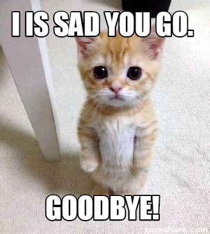

<!DOCTYPE html>
<html>

<head>
  <title>Stroop Size Task</title>
  <script src="https://unpkg.com/jspsych@8.0.0"></script>
  <script src="https://unpkg.com/@jspsych/plugin-html-keyboard-response@2.0.0"></script>
  <script src="https://unpkg.com/@jspsych/plugin-image-keyboard-response@2.0.0"></script>
  <script src="https://unpkg.com/@jspsych/plugin-fullscreen@2.1.0"></script>
  <script src="https://unpkg.com/@jspsych/plugin-html-button-response@2.0.0"></script>
  <script src="https://unpkg.com/@jspsych/plugin-survey-html-form@2.0.0"></script>
  <script src="https://unpkg.com/@jspsych/plugin-survey-text@2.1.0"></script>
  <script src="https://unpkg.com/@jspsych/plugin-preload@2.0.0"></script>
  <script src="https://unpkg.com/@jspsych/plugin-html-slider-response@2.0.0"></script> <!-- this is for the rating -->
  <!-- This is for data storage - please be sure to keep this script in all future updates to the code!! -->
  <script src="https://unpkg.com/@jspsych-contrib/plugin-pipe"></script>
  <link href="https://unpkg.com/jspsych@8.0.0/css/jspsych.css" rel="stylesheet" type="text/css" />

  <style>
    /* the #jspych...stimulus means that all stimulus for the plugin will be affeced by this
    .cb means that only stuff in the stimulus with the cb class would be affected 
    prevents the normal stimulus from being flipped since it wont have the cb class
    */
    .cb #jspsych-image-keyboard-response-stimulus {
      transform: scaleX(-1);
      width: 80%;
    }

    .normal #jspsych-image-keyboard-response-stimulus {
      width: 80%;
    }
  </style>
</head>

<body></body>

<script>

  /* initialize jsPsych */
  var jsPsych = initJsPsych(
    {
      on_finish: function () {
        jsPsych.data.displayData();
      },
      show_progress_bar: true,
      message_progress_bar: "Progress",
    }
  );

  /* create timeline */
  var timeline = [];

  //PLEASE KEEP FOR ALL FUTURE ITERATIONS
  //create a unique filename by combining a random string and a millisecond counter (to avoid duplicates)
  var random_id = jsPsych.randomization.randomID(10); 
  const date = new Date();
  random_id = "p" + random_id.toString();
  var file_id = random_id + "_" + date.getTime().toString();
  const filename = `${file_id}.csv`;
  //also store the random id for convenience
  jsPsych.data.addProperties({
    random_id: random_id,
  });
  //PLEASE KEEP FOR ALL FUTURE ITERATIONS

  /*create list of congruent and incongruent images */
  var congruent_images = [
    'stimuli/1-Congruent.jpg',
    'stimuli/2-Congruent.jpg',
    'stimuli/3-Congruent.jpg',
    'stimuli/4-Congruent.jpg',
    'stimuli/5-Congruent.jpg',
    'stimuli/6-Congruent.jpg',
    'stimuli/7-Congruent.jpg',
    'stimuli/8-Congruent.jpg',
    'stimuli/9-Congruent.jpg',
    'stimuli/10-Congruent.jpg',
    'stimuli/11-Congruent.jpg',
    'stimuli/12-Congruent.jpg',
    'stimuli/13-Congruent.jpg',
    'stimuli/14-Congruent.jpg',
    'stimuli/15-Congruent.jpg',
    'stimuli/16-Congruent.jpg',
    'stimuli/17-Congruent.jpg',
    'stimuli/18-Congruent.jpg',
    'stimuli/19-Congruent.jpg',
    'stimuli/20-Congruent.jpg',
    'stimuli/21-Congruent.jpg',
    'stimuli/22-Congruent.jpg',
    'stimuli/23-Congruent.jpg',
    'stimuli/24-Congruent.jpg',
    'stimuli/25-Congruent.jpg',
    'stimuli/26-Congruent.jpg',
    'stimuli/27-Congruent.jpg',
    'stimuli/28-Congruent.jpg',
    'stimuli/29-Congruent.jpg',
    'stimuli/30-Congruent.jpg',
    'stimuli/31-Congruent.jpg',
    'stimuli/32-Congruent.jpg',
    'stimuli/33-Congruent.jpg',
    'stimuli/34-Congruent.jpg',
    'stimuli/35-Congruent.jpg',
    'stimuli/36-Congruent.jpg'
  ];

  var incongruent_images = [
    'stimuli/1-Incongruent.jpg',
    'stimuli/2-Incongruent.jpg',
    'stimuli/3-Incongruent.jpg',
    'stimuli/4-Incongruent.jpg',
    'stimuli/5-Incongruent.jpg',
    'stimuli/6-Incongruent.jpg',
    'stimuli/7-Incongruent.jpg',
    'stimuli/8-Incongruent.jpg',
    'stimuli/9-Incongruent.jpg',
    'stimuli/10-Incongruent.jpg',
    'stimuli/11-Incongruent.jpg',
    'stimuli/12-Incongruent.jpg',
    'stimuli/13-Incongruent.jpg',
    'stimuli/14-Incongruent.jpg',
    'stimuli/15-Incongruent.jpg',
    'stimuli/16-Incongruent.jpg',
    'stimuli/17-Incongruent.jpg',
    'stimuli/18-Incongruent.jpg',
    'stimuli/19-Incongruent.jpg',
    'stimuli/20-Incongruent.jpg',
    'stimuli/21-Incongruent.jpg',
    'stimuli/22-Incongruent.jpg',
    'stimuli/23-Incongruent.jpg',
    'stimuli/24-Incongruent.jpg',
    'stimuli/25-Incongruent.jpg',
    'stimuli/26-Incongruent.jpg',
    'stimuli/27-Incongruent.jpg',
    'stimuli/28-Incongruent.jpg',
    'stimuli/29-Incongruent.jpg',
    'stimuli/30-Incongruent.jpg',
    'stimuli/31-Incongruent.jpg',
    'stimuli/32-Incongruent.jpg',
    'stimuli/33-Incongruent.jpg',
    'stimuli/34-Incongruent.jpg',
    'stimuli/35-Incongruent.jpg',
    'stimuli/36-Incongruent.jpg'
  ];

  /*preload*/
  var preload = {
    type: jsPsychPreload,
    images: congruent_images.concat(incongruent_images)
  };

  timeline.push(preload);

  /* create welcome message trial */
  var welcome = {
    type: jsPsychHtmlKeyboardResponse,
    stimulus: `
    <h1>Welcome to the experiment!</h1>
    <p>Press any key to begin</p>
    `
  };

  // timeline.push(welcome);

  // full screen mode ENTER
  var enter_fullscreen = {
    type: jsPsychFullscreen,
    fullscreen_mode: true
  };

  // timeline.push(enter_fullscreen);

  //take participant's student ID number
  var participant_id_entry = {
    type: jsPsychSurveyText,
    questions: [
      { prompt: "Please enter your particpant ID:", name: "participant_id" }
    ],
    on_finish: function (data) {
      console.log(data.responses);
      jsPsych.data.addProperties({
        participant: data.response.participant_id
      });
    }
  };

  // timeline.push(participant_id_entry);

  //creates instruction page
  var instructions = {
    type: jsPsychHtmlKeyboardResponse,
    stimulus: ` 
      <h1>Instructions</h1>
      <p>In this experiment, you will see 2 images of real world objects on each trial.
      <br>Your task is to determine which image appears larger or smaller on the screen.
      <br>
      <br>You will be asked to complete <strong>3</strong> blocks of trials:
      <br>
      <br>1. Practice block (get familiar with the task)
      <br>2. Larger image block (select the image that appears larger)
      <br>3. Smaller image block (select the image that appears smaller)
      <br>
      <br>Each trial will begin with a fixation cross (<strong>+</strong>), followed by the images.
      <br>
      <br>To respond, you will press <strong>z</strong> to choose the left image, and <strong>m</strong> to choose the right image.
      <br>Before starting, place your <strong>left</strong> index finger on <strong>z</strong> and <strong>right</strong> index finger on <strong>m</strong>.
      <br>Press any key to begin.
      </p>
    `
  };

  // timeline.push(instructions);

  /* creating the different stimulus lists */
  // 1. adds the proper data each stimulus list 
  var congruent_stimuli = congruent_images.map(function (img) {
    return {
      image_name: img,
      correct_response: "left",
      correct_response_key: "z",
      trial_type: "congruent",
      css_classes: 'normal' //css_classes is important so the image can get flipped 
    };
  });

  var incongruent_stimuli = incongruent_images.map(function (img) {
    return {
      image_name: img,
      correct_response: "right",
      correct_response_key: "m",
      trial_type: "incongruent",
      css_classes: 'normal'
    };
  });

  // 2. Combine both lists into one big list
  var stimulus_list = congruent_stimuli.concat(incongruent_stimuli);

  console.log(stimulus_list)

  // this is where the stimulus from the list earlier can get flipped, cb means counterbalanced
  var cb_stimulus_list = stimulus_list.map(flipped => ( //.map means add stuff, 
    {                                                // ==> works the same as function()
      ...flipped, /*...flipped means it copies everything from stimulus list and then 
       adds the stuff after it*/
      /* changes the name of the trial type, adds _flipped to the end of it */
      trial_type: flipped.trial_type + "_flipped",
      /* checks if correct response is left, if it is left, 
      changes it to right and vice versa, the ? works as an if else function  */
      correct_response: flipped.correct_response === "left" ? "right" : "left",
      correct_response_key: flipped.correct_response_key === "z" ? "m" : "z",
      css_classes: 'cb',
    }
  )
  );

  console.log(cb_stimulus_list);

  //combines counterbalancecd list and stimulus list into one list, holds all the stimuli 
  //we can take from it randomly for testing
  var all_stimulus_list = stimulus_list.concat(cb_stimulus_list);

  console.log(all_stimulus_list);

  //creates the stimulus list for the BIG BLOCK
  var all_stimulus_list_big = all_stimulus_list.map(big => ({
    ...big,
    trial_type: big.trial_type + "_big",
    size_condition: "big",
    prompt_text: `
      <h1>Which is visually <strong>BIGGER</strong> on the screen?</h1>
      <p>Press <strong>z</strong> for left, <strong>m</strong> for right</p>
    `
  }));
  console.log(all_stimulus_list_big)

  //creates the stimulus list for the SMALL BLOCK
  var all_stimulus_list_small = all_stimulus_list.map(small => ({
    ...small,
    trial_type: small.trial_type + "_small",
    correct_response: small.correct_response === "left" ? "right" : "left",
    correct_response_key: small.correct_response_key === "z" ? "m" : "z",
    size_condition: "small",
    prompt_text: `
      <h1>Which is visually <strong>SMALLER</strong> on the screen?</h1>
      <p>Press <strong>z</strong> for left, <strong>m</strong> for right</p>
    `
  }));

  console.log(all_stimulus_list_small)

  // Fixation cross code
  var fixation = {
    type: jsPsychHtmlKeyboardResponse,
    stimulus: '<div style="font-size:60px;">+</div>',
    choices: "NO_KEYS",
    trial_duration: 700,
  };

  //provides feedback saying if the previous trial is correct or not, for the PRACTICE TRIALS ONLY
  var practice_feedback = {
    type: jsPsychHtmlKeyboardResponse,
    stimulus:
      function () {
        var last_trial_correct = jsPsych.data.get().last(1).values()[0].correct;
        if (last_trial_correct) {
          return "<p style='color:green; font-size: 48px;'>That is correct!</p>";
        } else {
          return "<p style='color:red; font-size: 48px;'>Incorrect! Try again.</p>";
        }
      },
    choices: "NO_KEYS",
    trial_duration: 1000,
  };

  //instructions for SELECTING THE BIGGER IMAGE block 
  var big_instruction = {
    type: jsPsychHtmlKeyboardResponse,
    stimulus: `
      <h1>Which is visually <strong>bigger</strong> on the screen?</h1>
      <br>Press <strong>z</strong> to choose the left image, and <strong>m</strong> to choose the right image.
      <br>Press any key to continue.
    `
  };

  //instruction for SELECTING THE SMALLER IMAGE block
  var small_instruction = {
    type: jsPsychHtmlKeyboardResponse,
    stimulus: `
      <h1>Which is visually <strong>smaller</strong> on the screen?</h1>
      <br>Press <strong>z</strong> to choose the left image, and <strong>m</strong> to choose the right image.
      <br>Press any key to continue.
    `
  };

  //instructions for the PRACTICE TRIALS block
  var practice_instructions = {
    type: jsPsychHtmlKeyboardResponse,
    stimulus: `
      <h1>Practice Trials</h1>
      <br>You will complete two practice trials and receive feedback.
      <br>
      <br>Instructions will appear on the screen. 
      <br>If your response is incorrect, you must repeat the trial until correct.
      <br>
      <br>Press <strong>z</strong> to choose the left image, and <strong>m</strong> to choose the right image.
      <br>Press any key to continue.
    `
  }

  //instructons for the ACTUAL TRIALS block
  var actual_instructions = {
    type: jsPsychHtmlKeyboardResponse,
    stimulus: `
      <h1>Now you will begin the actual trials.</h1>  
      <p>Press any key to continue.</p>
    `
  };

  //A page telling partipants that they would now be chaging what they are picking
  var transition_instructions = {
    type:jsPsychHtmlKeyboardResponse,
    stimulus: function() { // message changes based on if the last block was for big or small selection 
      var last_trial_size = jsPsych.data.get().last(1).values()[0].size_condition;
      if (last_trial_size == undefined) {
        last_trial_size = jsPsych.data.get().last(2).values()[0].size_condition; }
      console.log(last_trial_size);
      if (last_trial_size == "big") {
        return `<p> Great job, you are half way done!
          <br> In the next part of the experiment, we're going to ask you to make the <strong>opposite</strong> judgment of the one you just made: 
          <br>instead of deciding which image is <strong>larger</strong>, we're going to ask you to decide which image is <strong>smaller</strong>, 
          <br>as quickly as you can while still being accurate.</p>`;
      } else {
        return `<p>Great job! In the next part of the experiment, 
          <br> we're going to ask you to make the <strong>opposite</strong> judgment of the one you just made: 
          <br>instead of deciding which image is <strong>smaller<strong>, we're going to ask you to decide which image is <strong>larger</strong>, 
          <br>as quickly as you can while still being accurate.</p>`;
      }
    }
  };

  //practice trial code, sets the values based on which stimulus is used
  var prac_trial_JW = { //should change the name of this 
    type: jsPsychImageKeyboardResponse,
    prompt: "<p>Press <strong>z</strong> to choose the left image, <strong>m</strong> to choose the right image.</p>",
    choices: ["z", "m"],
    stimulus: jsPsych.timelineVariable('image_name'),
    data: { 
      trial_type: jsPsych.timelineVariable('trial_type'),
      correct_response: jsPsych.timelineVariable('correct_response'),
      correct_response_key: jsPsych.timelineVariable('correct_response_key'),
      css_classes: jsPsych.timelineVariable('css_classes'),
      size_condition: jsPsych.timelineVariable('size_condition')
    },
    css_classes: jsPsych.timelineVariable('css_classes'),
    on_finish: function(data) {
      console.log(data.trial_type); //could honestly delete all the console.log 
      console.log(data.response);   //these things are mainly for debugging
      console.log(data.correct_response_key);
      console.log(data.css_classes);
      data.choices = data.response;  
      if (data.choices == data.correct_response_key) {
        data.correct = true;
      } else {
        data.correct = false;
      }
    },
  };

  var prac_looper = { //loops the practice trial if the partipant got it wrong 
    timeline: [prac_trial_JW, practice_feedback],
    loop_function: function(data){ //loop_function loops the function, like the name says
      var last_trial = data.values()[0]; //last_trial holds the data from the trial. 
      if (last_trial.correct == false) { //last_trial.correct looks at if correct is true or false
        return true; // because it is == false, if they get it wrong, loop_function will turn on
      } else {
        return false; //if they did it right, no loop
      }
    },
  };

  var pract_big = all_stimulus_list_big.slice(0,1) //gives us stimuli/1-Congruent.jpg for big & congruent

  console.log(pract_big);

  var pract_small = all_stimulus_list_small.slice(36,37) //gives us stimuli/1-Incongruent.jpg for small and incongruent

  console.log(pract_small);

  var prac_trial_big ={
    timeline: [prac_looper],
    timeline_variables: pract_big, //timeline variable out here so the stimulus doesnt get swapped 
  };

  var prac_trial_small ={
    timeline: [prac_looper],
    timeline_variables: pract_small, //timeline variable out here so the stimulus doesnt get swapped 
  };

  var practice_blocks = { //may need to break this apart into big block and small block
    timeline: [practice_instructions, big_instruction, prac_trial_big, small_instruction, prac_trial_small]
  };

  // timeline.push(practice_blocks);


  // creates a new stimulus list by randomly taking x amount from the combined list above FOR TESTING
  var test_stimulus_list = //should change the name of this, this is for the big stimulus 
    //shuffle is for the entire thing, un-comment it to test the entire thing (will go through 144 trials)
    // jsPsych.randomization.shuffle(all_stimulus_list_big); 

    // this is for debugging, 
    jsPsych.randomization.sampleWithoutReplacement(all_stimulus_list_big, 2);
  
  console.log(test_stimulus_list);

  var small_test_stimulus_list = //should change the name of this, this is for the small stimulus 
    //shuffle is for the entire thing, un-comment it to test the entire thing (will go through 144 trials)
    //jsPsych.randomization.shuffle(all_stimulus_list_small) 

    //<--this is for debugging 
    jsPsych.randomization.sampleWithoutReplacement(all_stimulus_list_small, 2);

  // here's how we can construct a simple size stroop judgment trial
  // TO DO: Hm, there's quite a lot of whitespace below the image slide, making the prompt appear far below it. Maybe that could be improved?
  // OTHER TO DOs: what else do we need to add to the trial procedure? What other information should we store? How can we turn this into a complete experiment timeline?
  var test_trials = { //should probaly change the name of this to actual trials
    type: jsPsychImageKeyboardResponse,
    prompt: jsPsych.timelineVariable('prompt_text'),  //changes the prompt based on the stimulus 
    choices: ["z", "m"],
    stimulus: jsPsych.timelineVariable('image_name'),
    data: {
      trial_type: jsPsych.timelineVariable('trial_type'),
      correct_response: jsPsych.timelineVariable('correct_response'),
      correct_response_key: jsPsych.timelineVariable('correct_response_key'),
      css_classes: jsPsych.timelineVariable('css_classes'),
      size_condition: jsPsych.timelineVariable('size_condition')
    },
    /* this is where we can add the class to flip the image for counterbalancing.
    Lets us check if the trial is using a flipped imaged or not
    if it uses a cb stimulus, it will be the 'cb' class and the image will be flipped
    otherwise it will be normal and not flipped */
    css_classes: jsPsych.timelineVariable('css_classes'),

    // check to see if the response is correct or not, adds it into the data
    on_finish: function (data) {
      console.log(data.trial_type);
      console.log(data.response);
      console.log(data.correct_response_key);
      console.log(data.css_classes);

      data.choices = data.response; 
      if (data.choices == data.correct_response_key) {
        data.correct = true;
      } else {
        data.correct = false;
      }
    }
  };

  var actual_feedback = { //feedback for the actual trials, different than the practice_feedback 
    type: jsPsychHtmlKeyboardResponse,
    stimulus:  "<p style='color:red; font-size: 48px;'>Incorrect!</p>",
    trial_duration: 1000,
    choices: "NO_KEYS",
  };

  var actual_feedback_node = { //makes the feedback conditional, only shows up if they get it wrong 
    timeline: [actual_feedback],
    conditional_function: function() {
      const last_trial_correct = jsPsych.data.get().last(1).values()[0].correct;
      if (last_trial_correct) {
        return false;
      } else {
        return true;
    }
  }};

  //sets up how a trial should work: fixation cross, stimulus, conditional feedback
  var big_trial = { 
    timeline: [fixation, test_trials, actual_feedback_node], 
    timeline_variables: test_stimulus_list,
    randomize_order: true,
  }

  var small_trial = {
    timeline: [fixation, test_trials, actual_feedback_node], 
    timeline_variables: small_test_stimulus_list,
    randomize_order: true,
  }

  timeline.push(actual_instructions)

  //makes the trial blocks
  var big_question_block = {
    timeline: [big_instruction, big_trial]
  }

  timeline.push(big_question_block);

  timeline.push(transition_instructions);

  var small_question_block = {
    timeline: [small_instruction, small_trial,]
  }

  timeline.push(small_question_block)

  //Rating the experiment
  var overall_rating = {
    type: jsPsychHtmlSliderResponse,
    stimulus: "<p>How would you rate our experiment? (Lowest:1, Highest:5)</p>",
    min: 1,
    max: 5,
    start: 3,
    step: 1,
    labels: ["1", "2", "3", "4", "5"],
    require_movement: true,    
  };

  timeline.push(overall_rating)

  //Survey for the experiment
  var ending_survey = {
    type: jsPsychSurveyText,
    preamble: "<h2>Quick Survey</h2><p>Please help us answer a few questions before finishing.</p>",
    questions: [
      {prompt: "1. How do you think about our experiment?", placeholder: "Type your answer here...", rows: 3, columns: 70, required: true},
      {prompt: "2. What do you think is the topic we are testing on?", placeholder: "Type your answer here...", rows: 3, columns:70, required: true},
      {prompt: "3. Do you think you have a good knoweledge about the real-world size?",placeholder: "Type your answe here...", rows: 3, columns:70, required: true},
      {prompt: "4. Was there any technical issue you ran into?", placeholder: "Yes/ No. If yes, type it here... ", rows: 3, columns:70, required: true},
    ]
  };

  timeline.push(ending_survey)

  //Short debrief before finishing the experiment
  var debrief = {
  type: jsPsychHtmlKeyboardResponse,
  stimulus:`
    <h1>Thank you so much for participating!</h1>
    <p>This study is testing on people's knowledge about different objects' size in the real world, including their relevant size comparison.</p>
    <p>If you have any questions or recommendations about the experiment, feel free to reach out to us or come talk to us.</p>
    <p><i>Press any key to finish the experiment.</i></p>
  `
  };
  timeline.push(debrief)
  
  //PLEASE KEEP FOR ALL FUTURE ITERATIONS
  //this portion of the code ensures that the data gets sent to be stored on OSF
  const save_data = {
    type: jsPsychPipe,
    action: "save",
    experiment_id: "QxQdem5beSdb",
    filename: filename,
    data_string: () => jsPsych.data.get().csv()
  };
  timeline.push(save_data);
  //PLEASE KEEP FOR ALL FUTURE ITERATIONS

  /*goodbye*/
  // goodbye cat background image in goodbye trial
  var goodbye = {
    type: jsPsychHtmlKeyboardResponse,
    stimulus: '<h1> Thank you for your participation! </h1><p></p>',
    choices: "NO_KEYS",
    trial_duration: 2000, /* without the duration or input, the screen would not change */
  };

  timeline.push(goodbye);

  // full screen mode EXIT
  var exit_fullscreen = {
    type: jsPsychFullscreen,
    fullscreen_mode: false,
    delay_after: 0
  }

  timeline.push(exit_fullscreen)

  /* start the experiment */
  jsPsych.run(timeline);

</script>

</html>